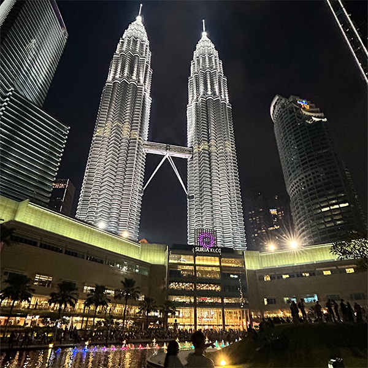
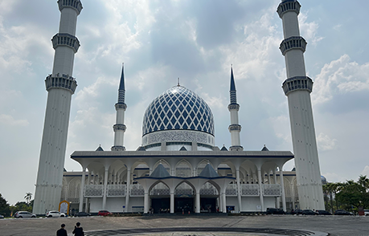
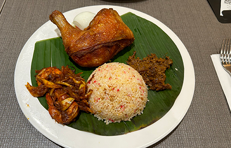
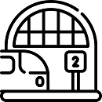
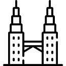

未来都市のような近代イスラム建築の高層ビルが空にそびえ、路地に入るとアジアらしい喧噪の世界。
モダンとレトロが混在し、さまざまな民族が共存するクアラルンプールは、世界でも希な多様性に満ちた都市です。

天空にそびえる88階建てのツインタワーを中心に、世界に名だたる高級ホテルが立ち並び、
あらゆる民族が楽しめる多種のグルメ、海外ブランドからアジア雑貨などアジアの魅力が詰まったパラダイス。

グルメなくしてマレーシアの魅力は語れません。なかでも、さまざまな民族が暮らすKLのグルメは、驚くほどバラエティに富んでいます。
おもな民族のマレー、中国、インドの3つのジャンルに、それらが融合した料理まで。
主要観光地区へのアクセス

